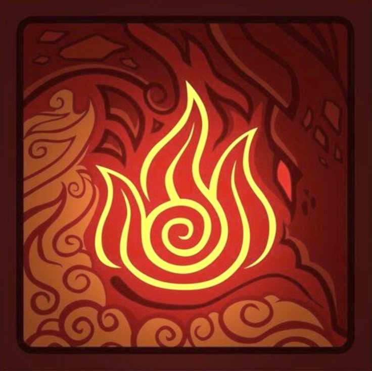
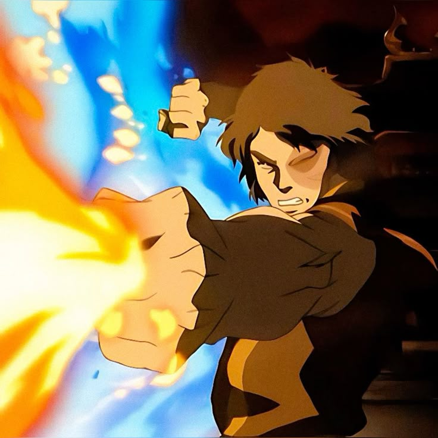
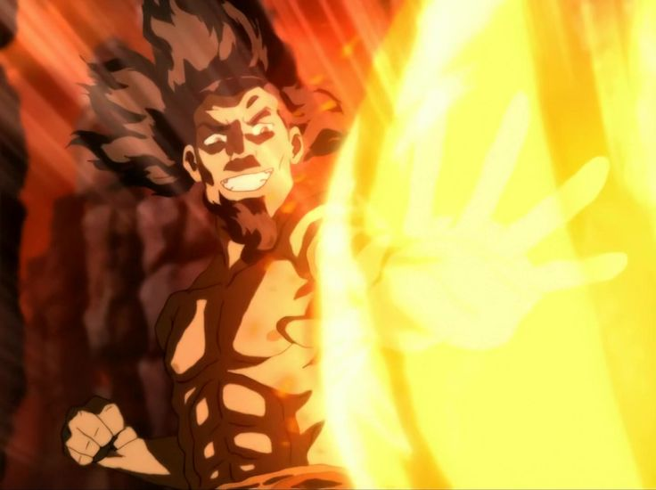
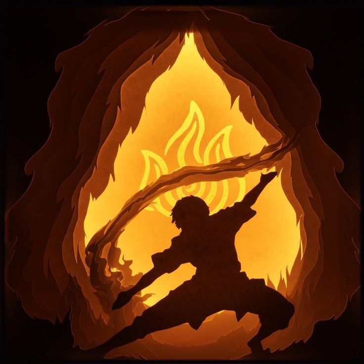

Fogo
O fogo é um dos quatro elementos do mundo Avatar. Seus dominadores utilizam sua energia interna para criar, controlar e manipular o fogo de diferentes maneiras.
Conheça o fogo ↓
O poder do fogo
A dominação de fogo permite que seus usuários criem e controlem chamas utilizando sua própria energia. Seus movimentos costumam ser rápidos, fortes e agressivos.
Os dominadores de fogo podem utilizar suas habilidades tanto para ataque quanto para defesa, criando chamas, rajadas e diferentes técnicas durante um combate.
O fogo também possui uma característica especial: ele representa energia e força de vontade, sendo alimentado pelo espírito e pela determinação de seu dominador.


Ozai
Ozai, o Senhor do Fogo, é considerado um dos mais poderosos dominadores de fogo de sua época. Ele possui enorme habilidade no controle das chamas e utiliza seu poder de forma extremamente agressiva e destrutiva.
Poder
Ozai possui um domínio excepcional sobre o fogo, sendo capaz de lançar poderosas rajadas de chamas.
Relâmpago
Ele também domina uma das técnicas mais avançadas da dominação de fogo: a geração de relâmpagos.
Fúria
Sua enorme força e agressividade fazem dele um dos adversários mais perigosos do mundo Avatar.
Técnicas do Fogo
A dominação de fogo possui diferentes técnicas que podem ser utilizadas dependendo da situação.
Relâmpago
Uma técnica avançada capaz de produzir e controlar energia elétrica.
Combustão
Uma técnica rara que permite liberar uma poderosa explosão de energia.
Fogo Azul
Uma técnica onde o fogo do dominador é muito mais quente e perigoso.

A força do fogo
O fogo representa energia, transformação e força de vontade. Para dominar esse elemento, é necessário aprender a controlar não apenas as chamas, mas também as próprias emoções.
Essa característica faz com que a dominação de fogo seja extremamente poderosa, mas também exige disciplina e controle.
Assim como uma chama pode iluminar ou destruir, seus dominadores precisam aprender a utilizar seu poder de maneira responsável.
Energia, força e transformação
O fogo é muito mais do que apenas um elemento. Ele representa energia, paixão, transformação e a capacidade de seguir em frente.
A história de personagens como Ozai mostra como poder, treinamento e domínio das técnicas podem transformar um dominador em um dos guerreiros mais perigosos de sua época.
O fogo encontra sua força dentro de si.
VOLTAR AO INÍCIO →